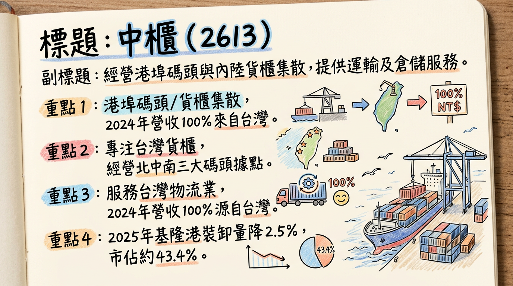
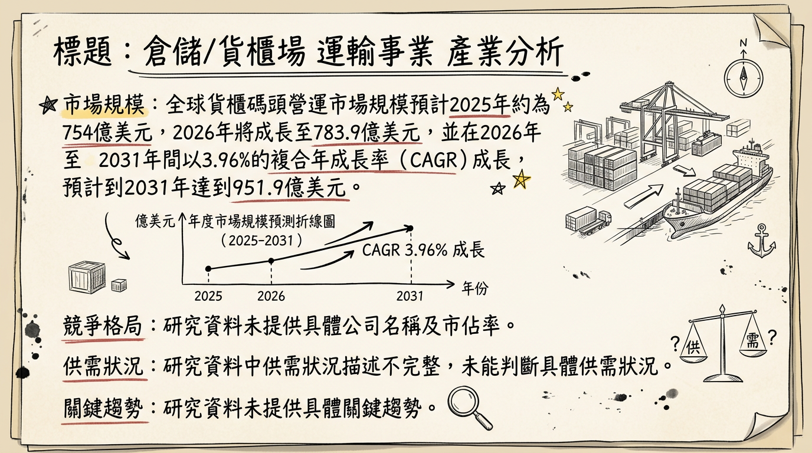
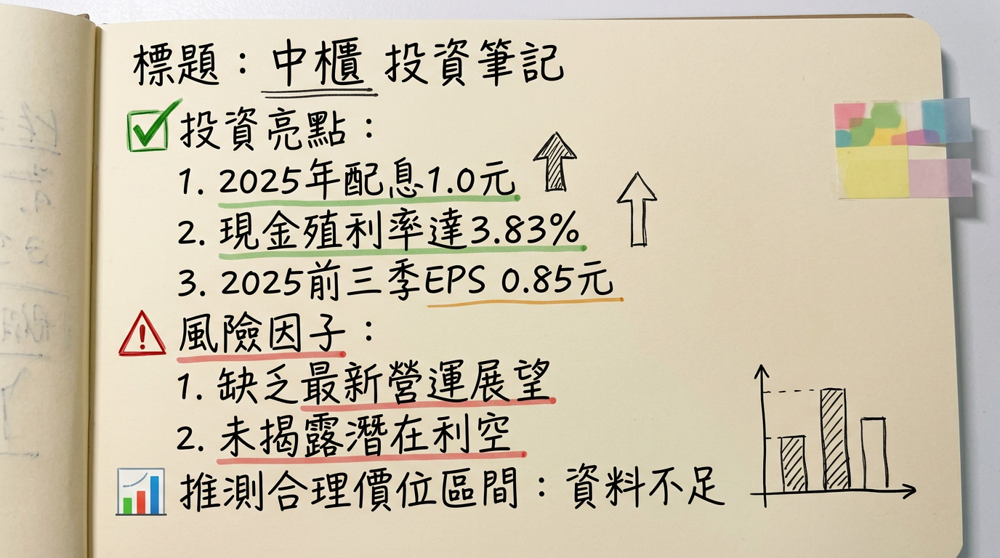

中櫃（2613）作為台灣港埠碼頭與貨櫃集散站的領導業者，受惠於穩健的基礎設施業務及航運產業輪動題材，儘管面臨全球海運市場運力過剩挑戰，仍透過成本控制與效率提升維持獲利韌性，並以穩定股利政策吸引資金，2026年首月營收年增14.65%，展望營運持穩向上，然需留意全球經濟放緩與航運供需失衡風險。
中國貨櫃運輸股份有限公司（中櫃，股票代碼2613）主要經營港埠碼頭與內陸貨櫃集散站，以及商港區船舶貨物裝卸承攬業務。此外，公司也辦理貨櫃修理維護業務、一般倉庫及保稅業務等多元服務。
| 業務類別 | 營收佔比 |
|---|---|
| 碼頭業務 | 86.7% |
| 櫃場業務 | 7.5% |
| 其他業務 | 5.8% |
中櫃專注於臺灣的貨櫃集散業務，擁有北、中、南三大據點，主要承租並經營基隆港西19-21號碼頭及台中港10、11號碼頭。
| 據點 | 2025年Q1-Q3貨櫃裝卸量 (萬TEU) | 2024年Q1-Q3貨櫃裝卸量 (萬TEU) | 2025年Q1-Q3總裝卸量 (萬TEU) | 年增率 (YoY) | 2025年Q1-Q3市佔率 | 2024年Q1-Q3市佔率 |
|---|---|---|---|---|---|---|
| 基隆港 | 52.0 | 53.6 | 119.7 | -2.5% | 43.41% | 43.65% |
| 台中港 | 45.0 | 42.3 | 119.0 | -2.1% | 35.58% | 35.32% |
| 月份 | 金額 (新台幣億元) | 月增率 (MoM) | 年增率 (YoY) |
|---|---|---|---|
| 2 2026年1月 | 3.07 | -1.20% | 14.65% |
| 2025年12月 | 3.11 | 14.52% | 5.27% |
| 2025年11月 | 2.71 | 2.19% | -4.87% |
| 2025年10月 | 2.65 | -8.24% | 5.28% |
| 2025年9月 | 2.89 | -2.32% | 3.85% |
| 2025年8月 | 2.96 | 2.01% | -0.25% |
| 年度/季度 | 營收 | 營業毛利 | 營業利益 | 稅後淨利 | EPS (元) |
|---|---|---|---|---|---|
| 2025 Q3 | 877,386 | 159,965 | 101,000 | 49,615 | 0.36 |
| 2025 Q2 | 869,609 | 157,180 | 102,000 | 35,374 | 0.26 |
| 2025 Q1 | 771,692 | 114,723 | 62,000 | 32,370 | 0.23 |
| 2024 Q4 | 833,892 | 144,011 | 93,000 | -1,162 | -0.01 |
| 2024 Q3 | 849,000 | 153,000 | 96,000 | 50,000 | 0.36 |
| 2024 Q2 | 834,000 | 144,000 | 92,000 | 47,000 | 0.34 |
| 2024 Q1 | 769,000 | 109,000 | 60,000 | 21,000 | 0.15 |
| 年度 | 全年營收 (新台幣億元) | EPS (新台幣元) |
|---|---|---|
| 2025 | 33.68 (實際) | 0.85 (Q1-Q3累計) |
| 2024 | 32.85 (實際) | 0.84 (實際) |
中櫃於2025年11月21日舉行法人說明會，說明2025年前三季營運成果與市場展望。
* 累計稅後淨利為1.17億元，每股盈餘(EPS)為0.85元，已超越2024年全年。
* 核心碼頭作業量年減3.2%，反映全球海運市場貨量放緩，但公司獲利能力仍提升。
* 面對海運市場供過於求的新常態，預計2025年全球船隊運能將增長6.3%，遠高於貨運需求增長率2%，導致運價面臨下行壓力。
* 公司將專注於成本控制、提升服務品質，並透過綠色港口的競爭優勢吸引客戶，以應對市場的不確定性。
目前公開資料中，未有針對中櫃（2613）於2025-2026年度的具體券商目標價及EPS預估。部分報導僅提及特定券商對貨櫃航運龍頭（如長榮）的目標價，但未涵蓋中櫃。
| 券商名稱 | 目標價 (新台幣元) | 評等 | 日期 (資訊發布) |
|---|---|---|---|
| (無明確資料) | N/A | N/A | N/A |
| 年度/季度 | 營收 (千元) | 毛利率 | 營業利益率 | 稅後淨利率 |
|---|---|---|---|---|
| 2025 Q3 | 877,386 | 18.23% | 11.51% | 5.65% |
| 2025 Q2 | 869,609 | 18.08% | 11.73% | 4.07% |
| 2025 Q1 | 771,692 | 14.86% | 8.04% | 4.19% |
| 2024 Q4 | 833,892 | 17.27% | 11.15% | -0.14% |
| 2024 Q3 | 849,000 | 18.02% | 11.31% | 5.89% |
| 2024 Q2 | 834,000 | 17.27% | 11.03% | 5.64% |
| 2024 Q1 | 769,000 | 14.17% | 7.80% | 2.73% |
2025年第三季毛利率、營業利益率和稅後淨利率均呈現穩健表現，其中毛利率維持在18%以上。相較2024年第四季度的稅後淨利為負值，2025年第一季至第三季已恢復穩定獲利。整體利潤率的改善，可能歸因於公司在營運效率提升與成本控制上的努力。業外損益對稅前淨利的影響仍較大，尤其2024年Q4和2025年Q3，顯示公司在非核心業務或投資上可能存在波動，需進一步關注。
| 年度/季度 | 存貨週轉天數 (天) | 應收帳款週轉天數 (天) | 自由現金流 (千元) |
|---|---|---|---|
| 2025 Q3 | 22.74 | 62.27 | -101,143 |
| 2025 Q2 | 22.99 | 57.83 | -13,985 |
| 2025 Q1 | 24.70 | 64.14 | 75,106 |
| 2024 Q4 | 23.84 | 60.36 | 42,550 |
| 年度/季度 | 折舊 (千元) | 攤銷 (千元) |
|---|---|---|
| 2025 Q3 | 158,103 | 1,307 |
| 2025 Q2 | 157,477 | 1,312 |
| 2025 Q1 | 158,762 | 1,313 |
| 2024 Q4 | 155,361 | 1,336 |
| 年度 (發放年度) | 現金股利 (元) | 股票股利 (元) | 除息日 | 現金發放日 | 現金殖利率 (2026/03/04收盤價25.75元) |
|---|---|---|---|---|---|
| 2025 | 1.0 | 0.0 | N/A | N/A | 3.83% |
| 2024 | 1.0 | 0.0 | 2025/3/13 | 2025/4/11 | 3.83% |
| 2023 | 0.6 | 0.0 | 2024/3/14 | 2024/4/12 | 2.33% |
| 市場定義 | 2025年市場規模 (美元) | 2026年市場規模 (美元) | 複合年成長率 (CAGR) | CAGR區間 | 2031/2032/2034年預估規模 (美元) |
|---|---|---|---|---|---|
| 全球貨櫃碼頭營運 | 754億 | 783.9億 | 3.96% | 2026-2031年 | 951.9億 (2031年) |
| 海運港口服務 | 965.7億 | 1003.1億 | 5.06% | 2026-2034年 | 1489.3億 (2034年) |
| 港口及碼頭營運 | 49.5141億 | N/A | 9.8% | 2026-2032年 | 95.2736億 (2032年) |
| 港口及碼頭營運 | N/A | N/A | 12% | 2024-2029年 | 628.8億 (2029年) |
全球海運市場預計在2026年面臨供過於求的嚴峻挑戰。
目前未找到2025-2026年貨櫃碼頭或港口營運產業的具體平均毛利率水準的最新資料。
| 公司名稱 | 主要業務/備註 |
|---|---|
| PSA International Pte Ltd | 全球領先的港口及碼頭營運商。 |
| DP World | 港口及碼頭營運巨頭，亦涉足港口基礎設施與物流。 |
| China Merchants Port Holdings | 中國大型港口營運商，業務遍及全球。 |
| APM Terminals (A.P. Moller-Maersk) | 馬士基旗下碼頭營運部門，全球主要港口服務供應商。 |
| Hutchison Ports | 長江和記實業旗下，全球最大的港口投資、發展和營運商之一。 |
| COSCO Shipping Ports Ltd | 中國遠洋海運集團旗下，全球領先的碼頭營運商。 |
目前未找到2025-2026年關於中櫃與其主要競爭對手在技術、產能、客戶或價格方面的具體比較資料。
台灣上市櫃公司中，陽明（2609）、長榮（2603）、萬海（2615）主要為貨櫃航運公司，而非純粹的碼頭營運商，故無法直接進行營收規模、毛利率、EPS的同業比較。中櫃的業務模式更偏向基礎設施服務。
* 趨勢： 導入AI、IoT、大數據、自動化裝卸、無人機及預測性抵港時間（ETA）工具，台灣港務公司已於2025年啟動AI數位轉型。
* 影響： 提升港口吞吐量與貨物周轉速度，降低人力成本與錯誤，強化安全管理，並透過數據分析支持決策。自動化貨櫃碼頭市場規模預計在2026-2035年間以7.9% CAGR成長。
* 趨勢： 積極推動節能減碳、岸電系統、低碳港口政策，將ESG理念融入核心業務。
* 影響： 減少能源消耗與排放，符合國際海事組織（IMO）減排目標，提升企業形象與競爭力。
* 趨勢： 地緣政治衝突與貿易保護主義加速供應鏈重組，企業重視韌性並加速區域化布局。
* 影響： 物流與航運業者加速多元布局以分散風險，亞洲區域內貿易增長，對數位化與AI應用要求提高以符合國際標準。
* 發展綠色永續服務，吸引ESG導向客戶，提升企業形象。
* 受惠於亞洲區域內貿易成長，穩定貨櫃集散和倉儲業務量。
* 電子商務蓬勃發展持續推升貨物運輸與倉儲需求。
* 紅海危機緩解導致全球有效運力釋放，加劇供過於求，對業務量和收益造成負面影響。
* 技術升級所需的大額投資，若未能及時跟進，可能在競爭中處於劣勢。
* 全球經濟成長放緩，可能影響整體貨物貿易量。
* 成本控制與服務品質強化： 面對海運市場供過於求，公司專注於精準成本控制與提升服務品質，以維持客戶黏著度與市場份額。
* 亞洲區域貿易增長： 亞洲區域內貿易作為全球最大航線板塊，持續深化的一體化趨勢將為中櫃在台灣的港埠業務提供穩定需求支撐。
* 智慧港口技術導入深化： 台灣港務公司啟動AI數位轉型計畫，中櫃若能積極配合或自主導入更多AI、IoT應用，將進一步提升營運效率與服務價值。
* 新客戶/新市場拓展： 隨著供應鏈區域化與多元化，若能抓住新興貿易路線或新客戶群，將為公司帶來增量業務，但目前無具體資料。
* 產能優化與擴充： 雖無具體擴廠或產能擴充計畫，但設備汰舊換新與效率提升，實質上可視為「有效產能」的提升。
中櫃（2613）作為台灣重要的港埠碼頭與貨櫃集散站營運商，具備穩固的市場地位和穩定的現金流。考量其2025年穩健的獲利與配息能力、2026年1月營收的強勁表現，以及其基礎設施服務的防禦性，我們認為其投資價值在於其穩定性與長期趨勢。
然而，全球海運市場運力過剩與經濟成長放緩的風險不容忽視，且2026年第一季可能出現的EPS負值，暗示了短期營運的潛在挑戰，這將對市場預期造成壓力。
本報告由 AI 自動產生，資料來源為公開網路資訊，僅供參考，不構成投資建議。產生時間：2026-03-06 00:28


